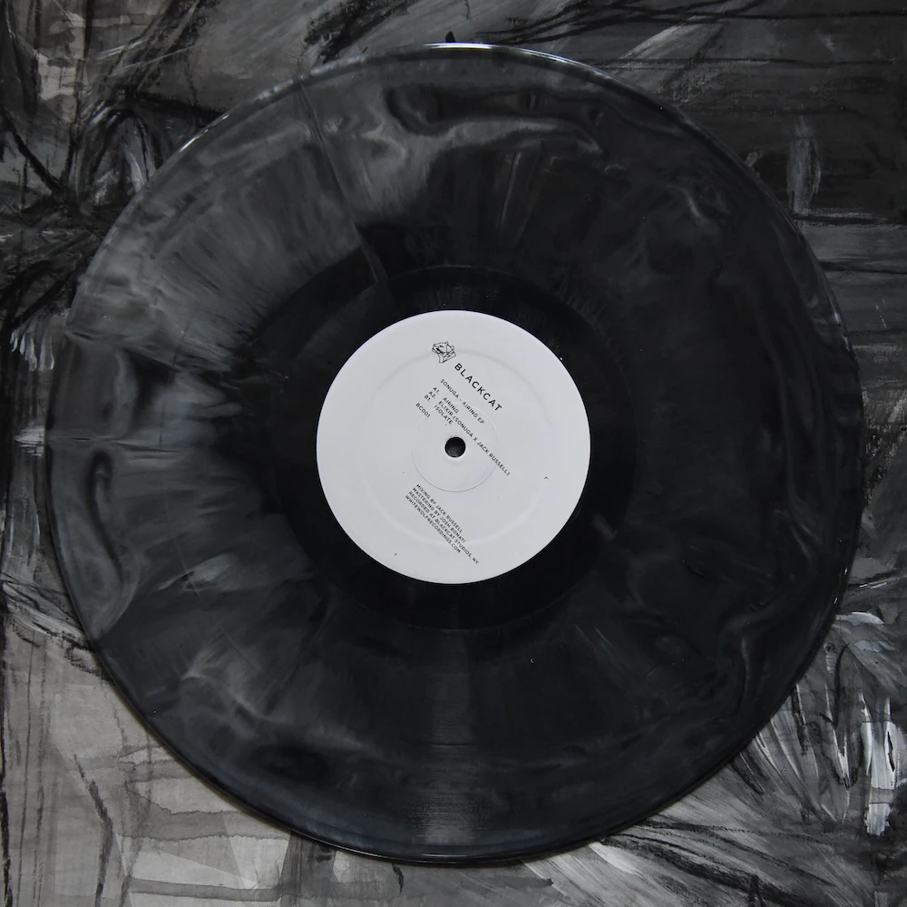

Ṣonuga
Sonuga is my Dub Techno and Minimal Project
Sonuga - Airing EP

BlackCat records introduces Femi Shonuga-Fleming.
A NYC based techno producer and DJ with Nigerian and Caribbean roots and an extensive background in live experimental electronic music.
Femi performs minimal, dub and hypnotic techno under the alias @shonuga_ and is interested in the intersections of deep textural soundscapes, layered percussion and shuffled rhythms.
His debut EP 'Airing' explores themes of sound and space influenced by his architectural studies, while also exploring and paying homage to contemporary dub techno.
BC001 is shipping 02.12.24 & limited to 75 Hand Poured 'Unique' Vinyl EPs. Regular 'black' pressings are available also at your local record store.
BlackCat Records is the sister label to WhiteWolf Records.
credits
released February 2, 2024
Sonuga - Production & Arrangement on all tracks.
Jack Russell - Co Production & Arrangement on 'Elixir', Mixing on all tracks.
Josh Bonati - Mastering
license